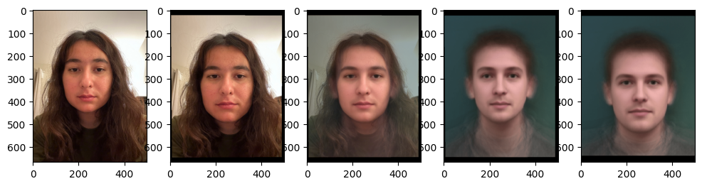

In this project, our goal was to learn how to morph images and warp faces onto different geometries. The idea was to learn more about affine transformations and how to warp and cross-dissolve images.
Correspondences between my face (left) and my twin sister, Yasmin (right). Tried to select core facial features.
Triangulations on my face (left) and my twin sister, Yasmin (right).
The project started by defining correspondences between two images. I used the labelling tool provided on the website, and manually highlighted key features of the eyes, lips, nose, and chin. This is shown in the first image. I then computed the mean image between my face and my sisters by averaging the two arrays, and computed the Delaunay triangulation off of that. The purpose of using Delaunay specifically was because the resulting triangles are less skinny, and so the resulting image is more smooth and clear. The reason for computing the Delaunay Triangulation off the mean image, instead of each individual one, was so that ensure the triangulation is closer to good for both images, instead of very good for one and not great for the other. This reduced the number of triangle deformations. The picture above shows the correspondences and resulting triangulation.
My face, the midway face, and my sister's face.
I then used the triangulations to compute the midway image between my face and my sister's. The way I did this was find the inverse transform, which mapped the mean face to my face (and after, the mean face to my sister's face). This is an affine transformation, so following the Ed comment I was able to set up the system of equations to solve for the transformation that mapped the corresponding triangle points from the midway image onto the corresponding triangle points on my image. Then, I used scipy polygon to get the relevant sections within the triangles, and applied the affine transform in order to place them into the warped image. To do it across channels, I used an interpolator per color channel, which ensured that if the new mapped pixel was "between" two other pixels, we would interpolate it to the closest pixel in that channel. After applying the affine transform to each polygon point and interpolating in all three color channels, I was then able to get the mean image warped onto my face and the mean image warped onto my sister's face. From there, I then did 0.5*this warp on my face + 0.5*this warp on my sister's face to combine the two, and then get back the resulting morphed midway face. You can see all three images above.
The 60 frames of my face morphing to my sister's face.
I then set up the ability to warp and cross-dissolve with different values, setting the value that you warp onto my face/my sister's face to be (1 - warp_frac)*my_points + warp_frac*(my_sister's_points) and setting the resulting cross-dissolved image to be (dissolve_frac)*my_face + (1 - dissolve_frac)*my_sister's_face. I then incremented both warp_frac and dissolve_frac on the same time from 0 to 1 and iterated over my morphing function in order to then generate 60 frames of my face morphing into my sister's face, then combined them into a gif. I chose to use 60 instead of 45 frames as it looked nicer to be slower to me. The gif is visible above. Note that it only plays once on each load of the page, so to get it to play, open it again in the new tab and scroll to the gif and you will be able to see it.
The average danish face.
After that, the next goal was to compute the "average" face from a dataset. I chose the Dane's dataset, computed the average face shape by averaging all the images, then warped that onto each face and averaged these warps together to get the resulting average Danish face.
Different danishes warped onto mid image.
I then computed for the first 16 images in the dataset, their faces warped onto this average face, which you can see here. The computation just used the same work above of warping with the affine transform, polygon function, and interpolation.

My face (1st), my face warped onto the average danish face (2nd), the midway point between my face and the average Danish face (3rd), the Danish face warped onto my face (4th) and the Average Danish Face (5th)
Then, I manually assigned correspondences from this average Danish face to my face. After that, I computed my face warped onto the average Danish face, and the average Danish face warped onto my face, using the exact same steps as above.
Caricature with alpha = -0.3 and alpha = 1.3 between my face and the average Danish face.
Then, I increased the warping alpha to create a caricature of my face warped onto the average Danish face. The alphas used are in the caption above, but the basic idea was just to increase warp_frac to be outside of the [0, 1] range to create a caricature-looking effect by accentuating certain features. Since the Danish face doesn't have that many similar characteristics to me, it looks kind of wacky in a fun way, but very clearly like a caricature.
My face, my face onto the average Chinese male shape, my face onto the average Chinese male appearance, my face onto both the average Chinese male shape and appearance, and the photo of the average Chinese male that I used.
Finally, for my bells and whistles, I changed my ethnicity and gender to the average Han Chinese male. The above shows me warping both my face and appearance, and the resulting fourth image is changing my ethnicity and gender with the average Chinese male.